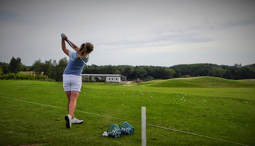

SPORT IN TANGIER
Golf, hiking or water activities in the Strait City Venture into thrilling sport activities.
On the Mediterranean coast, Tangier is where influences seamlessly intersect. Discover the best of its sport activities that will suit your abilities.
In Tangier, Golfing is an unmissable activity. The city's 18-hole course come from a long-standing tradition. Morocco's first golf course, founded in 1914, and designed by architects Cotton and Pennink, is today a modern course with fairways, greens and bunkers in a splendid setting. In the middle of cypresses and pines with a scent of eucalyptus, you can indulge your endless passions.
On the shores of the strait, the city of Tangier also offers a large number of water activities. You’ll be also tempted to venture into the hinterland : the Rifan reliefs form a splendid setting for hiking or trekking. In these mountains, thrill and exploration are both your companions.
Tangier is a picturesque and active city, where it’s enjoyable to walk and indulge in fun activities.